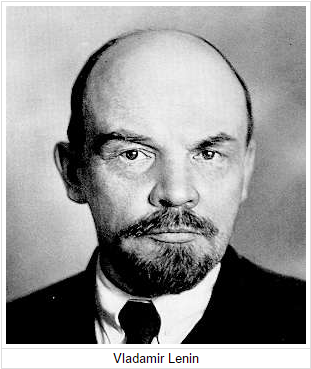

Introduction:
In 1917, Russia was in chaos. The government was corrupt and unreliable with a Tsar that did not care about his country. World War 1 had made the country broke and poor, yet the Tsar did not even try to stop the war. The people finally had enough and started to protest against the government and demanded for a better environment. Yet again, the Tsar ignored his people. Even the military and some government officials joined in the protest. Finally, the Tsar realized how bad the situation was and abdicated the throne on March 2nd.
 Two organizations took over power in Russia. The official government was called the Provisional Government, with Alex Kerensky as the leader. There was also the Petrograd Soviet, consisted of workers and they represented the voice of the people. However, after a new government was established, no changes nor improvements were made. The war wasn't stopped, and the people were still living in poverty. Then the man called Vladimir Lenin led the uprising of the Bolsheviks, an extremist branch of the SDLP, against the provisional government. They promised the people land, bread and peace, which was what everybody wanted. With the support of the people, the Bolsheviks were more and more powerful. Finally, on October 24, the Bolsheviks took control over all the government buildings, and on October 25, Vladimir Lenin declared the Provisional government overthrown, and thus, the Soviet Union was established.27